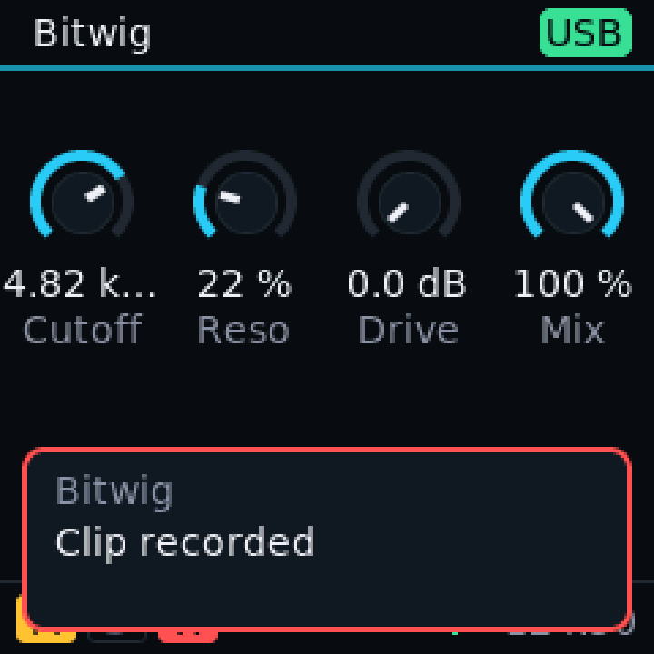

DAW manual · Live · The surface
5 Reading the screen
While the script is connected, the screen shows your DAW, not the keyboard. Every view has the same frame: a status bar on top, the view's content in the middle, and the selected track's colour at the bottom.
Download the Live PDF PDF, 0.5 MB
The status bar

| Place | Shows |
|---|---|
| Left | What you are working on: the device's name in the Device view, Mixer, Overview or Browser in the others |
| Middle | Where you are inside it: the remote page ("2/5 Filter"; the word pads is added when the pads are the device's switches), the tracks the Mixer shows ("Tracks 1-8"), the project name, the browser's title |
| Right | USB (green) while a computer is connected |
Without a script, the left side reads DAW and the screen shows the keyboard's own home page: the last note or chord, the bank, the octave and which modes are on.
The accent and the track colour
Two colours tell you different things, and they never swap roles.
- The accent is the screen's highlight colour: the line under the status bar, the knob arcs, the cursor, the framed track, lit chips. The script sets it once when it connects. It stays the same all session, whichever track you select.
The Live script uses amber; the setting accent: 'off' in user_settings.py keeps your own accent from Globe → System → Accent instead.
- The track colour is the colour of the track you selected in the DAW. It shows as a coloured bar next to the track's name (Device view), as each strip's colour line (Mixer), and as a thin line along the bottom of the screen (Overview, Browser).
So when the bottom line or bar changes colour, you selected another track. The rest of the screen keeps its look.
Knob cells
In the Device view (and the small cells of the Overview), each cell sits above the knob it belongs to:
- the name of the parameter and the value as the DAW writes it ("4.82 kHz", "31 %");
- an arc showing the position. Parameters that go both ways from a centre fill from 12 o'clock;
- empty and dim when the knob has nothing to control on this page. Turning it does nothing.
Messages
Short messages appear as a card over the screen and disappear by themselves:
- Fader moves outside the Mixer: "Bass: -4.8 dB", with "(move up)" or "(move down)" while the fader waits for pick-up.
- Tempo while you change it with Oct- + K8.
- Pads: <device> switches once, when pad bank B turns into the device's switches (Device view).
- Alerts from the DAW. Only an alert interrupts a keyboard page you are editing.

When the connection ends
If the DAW quits, the script is switched off, or the cable comes out, the keyboard notices within two seconds. It then drops everything the script owned: the knobs, faders, pads and buttons go back to the keyboard's own functions and lights, and no note is left hanging. When the script comes back, it takes them again.